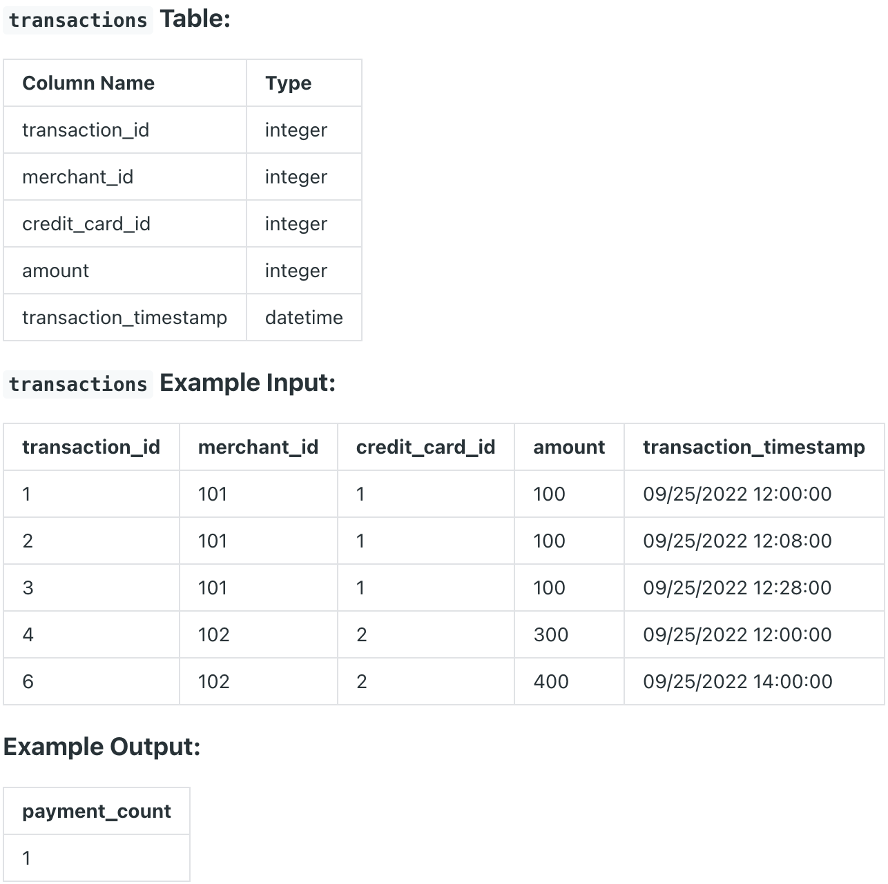

Question sourced from DataLemur.com.
Database: PostgreSQL
Sometimes, payment transactions are repeated by accident; it could be due to user error, API failure or a retry error that causes a credit card to be charged twice.
Using the transactions table, identify any payments made at the same merchant with the same credit card for the same amount within 10 minutes of each other. Count such repeated payments.
Assumptions: The first transaction of such payments should not be counted as a repeated payment. This means, if there are two transactions performed by a merchant with the same credit card and for the same amount within 10 minutes, there will only be 1 repeated payment.

/*
My strategy: For each window of same-amount payments for a given
credit card at the same merchant, use the LAG() window function
to access the previous same-amount payment made, then get the time
different in minutes between the two same-amount payments. Wrap
this result in a CTE, then filter by rows with a difference in
minutes that is less than or equal to 10. The count of the rows
that remain is the total number of repeated payments.
*/
WITH payment_comparison AS (
SELECT EXTRACT(EPOCH FROM transaction_timestamp -
LAG(transaction_timestamp) OVER(
PARTITION BY merchant_id, credit_card_id, amount
ORDER BY transaction_timestamp
)
) / 60 AS minutes_difference
FROM transactions
)
SELECT COUNT(*) AS total_repeated_payments
FROM payment_comparison
WHERE minutes_difference <= 10;